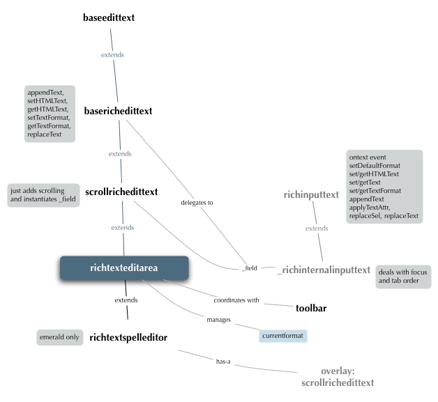

Rich Text
Rich Text
OpenLaszlo provides a rich text object and capabilities for procedurally setting HTML text attributes:
Overview
This chapter explains the richinputtext component, which allows you to include and manipulate html-formatted text in your applications. This diagram describes the architecture of the rich text editor:

To use rich this component, include the line:
<include href="/extensions/views/richinputtext.lzx" />
Formatting capabilities include:
- Text style of bold, underline, or italics
- Font type and size
- Text color
- Hyperlink creation, specifying a URL, and choosing a target type
- Paragraph alignment: left, right, center
- Block indent/outdent
You can specify html text by:
- Directly including markup
- Using procedural code to set rich text attributes
Each of these methods is described in turn below.
Directly including rich text markup
You can specify the html formatting directly in the richinputtext tag, if you escape it with CDATA, like this:
<canvas bgcolor="#EAEAEA" height="110" width="400">
<include href="/extensions/views/richinputtext.lzx" />
<simplelayout axis="y" spacing="4" />
<richinputtext name="myRichText" width="300" height="100">
<![CDATA[
foo <b>bar</b> baz lum
]]>
</richinputtext>
</canvas>
Procedurally modifying text
The setTextFormat method allows you to procedurally set text properties. Using setTextFormat is a two step process:
- Create a LzTextFormat and assign to it the values of the properties you want to change;
- Pass the LzTextFormat object as the argument to the setTextFormat method.
The example below demonstrates several ways that the richinputtext class can be used to apply rich formatted text.
<canvas bgcolor="#EAEAEA" height="600" width="1000">
<!---
This file demonstrates several ways to use the richinputtext class
to set the formatting of rich formatted text. Corresponding "get"
methods also exist.
-->
<!-- auto-included BUT NOT in lps-dev -->
<include href="/extensions/views/richinputtext.lzx" />
<!-- -->
<debug x="300"/>
<view x="20" y="20">
<window title="toggleFormat">
<simplelayout axis="y" spacing="4" />
<!--- These checkboxes use the toggleFormat function to
toggle the boldness, italic-ness, or underline-ness of the
text.
-->
<richinputtext name="rich" width="300" height="100"
multiline="true"
text="This richinputtext demonstrates the toggleFormat api. " >
</richinputtext>
<checkbox text="bold" onclick="parent.toggleFormat('bold')" />
<checkbox text="italic" onclick="parent.toggleFormat('italic')"/>
<checkbox text="underline" onclick="parent.toggleFormat('underline')"/>
<method name="toggleFormat" args="attr">
rich.toggleFormat(attr, 0, 300);
</method>
</window>
<window x="120" y="120" title="setTextAttr">
<simplelayout axis="y" spacing="4" />
<!--- With the setTextAttr function, we can set particular attributes
of text to be particular values, in whatever combinations we choose.
Notice that only the specified values change; if LzTextFormat.color
is not defined, the color of the font doesn't change.
-->
<richinputtext name="rich" width="300" height="100"
multiline="true"
text="Use setTextFormat to set several formatting attributes at once." >
</richinputtext>
<button onclick="parent.bigAndSans()" >
make it huge and futura
</button>
<button onclick="parent.redAndSmall()" >
make it red and big
</button>
<button onclick="parent.blueAndItalic()" >
make it blue and italic and Times
</button>
<method name="bigAndSans">
var tf = new LzTextFormat();
tf.font = "Futura";
tf.size = 32;
rich.setTextFormat(tf, 0, 300);
</method>
<method name="redAndSmall">
var tf = new LzTextFormat();
tf.color = red;
tf.size = 18;
rich.setTextFormat(tf, 0, 300);
</method>
<method name="blueAndItalic">
var tf = new LzTextFormat();
tf.color = blue;
tf.italic = true;
tf.font = 'Times';
rich.setTextFormat(tf, 0, 300);
</method>
</window>
<window x="240" y="240" title="applyTextAttr">
<simplelayout axis="y" spacing="4" />
<richinputtext name="rich" width="300" height="100"
multiline="true"
text="Use applyTextAttr to set a single attribute at a time." >
</richinputtext>
<slider name="sizeslider" minvalue="10" maxvalue="32" showvalue="false" value="12">
<handler name="onvalue">
parent.rich.applyTextAttr("size", this.value, 0, 300);
</handler>
</slider>
</window>
<window x="360" y="10" title="Default Format" width="500" height="500"
id="trickster">
<simplelayout axis="y" spacing="4" />
<view name="explanation">
<text>
See the richinputtext api documentation for an explanation.
</text>
</view>
<richinputtext name="rich" width="${parent.width-10}" height="100"
multiline="true"
text="01234567890123456789" >
</richinputtext>
<view name="btns">
<simplelayout axis="x" spacing="4" />
<text>Set default format to...</text>
<button onclick="parent.parent.redAndBig()" focusable="false" >
red and big
</button>
<button onclick="parent.parent.blueAndItalic()" focusable="false" >
blue and italic and Times
</button>
</view>
<view name="trick">
<simplelayout axis="x" spacing="4" />
<checkbox name="trickcheckbox" text="Use Insertion Point trick" />
<text visible="${parent.trickcheckbox.value}">Move insertion point to...</text>
<slider name="slider" minvalue="0" maxvalue="20" showvalue="true" value="12"
visible="${parent.trickcheckbox.value}"
>
</slider>
</view>
<method name="redAndBig">
var tf = new LzTextFormat();
tf.color = red;
tf.size = 18;
rich.setDefaultFormat(tf);
var insertionpoint = this.trick.slider.getValue();
if (this.trick.trickcheckbox.getValue()) {
this.forceFormatAt(insertionpoint);
}
this.rich.setSelection(insertionpoint + 1, insertionpoint +1);
</method>
<method name="blueAndItalic">
var tf = new LzTextFormat();
tf.color = blue;
tf.italic = true;
tf.font = 'Times';
rich.setDefaultFormat(tf);
var insertionpoint = this.trick.slider.getValue();
if (this.trick.trickcheckbox.getValue()) {
this.forceFormatAt(insertionpoint);
}
this.rich.setSelection(insertionpoint + 1, insertionpoint +1);
</method>
<method name="forceFormatAt" args="index">
// Insert some text
this.rich.replaceText(index, index, 'AZ');
// Format the text we just inserted
this.rich.setTextFormat(this.rich.defaultformat, index, index+2);
// Now if you put the insertion point between the A and Z, you'll
// get the format specified in default format.
</method>
</window>
</view>
</canvas>